歐歐!可憐的摩卡拔為了讓兒子吃飽穿暖好過冬
內褲破了都捨不得丟,還在那縫縫補補!?
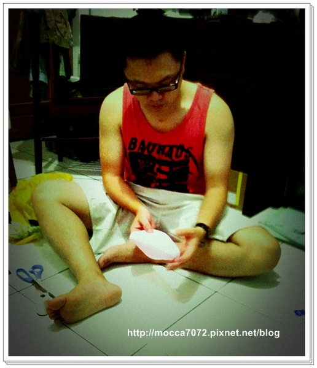
歐屋~~其實是為了今年的萬聖趴我們又在找自己麻煩啦!(跪)
老娘長這嘛大從來也沒在過萬聖節，
從去年開始為了卡卡的造型居然掉入了萬惡深淵～
正確來說應該是認識了卡內家就掉進去了 
話說收到趴踢通知後,日子照過繼續ㄊㄨㄚ沙！
到逼近的前兩週才開始上網找造型~~哈哈哈
結果搞到最後找不到滿意的,只好又..."尬底來"啦!
(我幹嘛老是跟自己過不去呀！ )
)
其實有中意一個，不過後來決定轉送給毛家的新成員"帕飛" "濕魚"毛茸茸小捧油當賀禮
(是什麼東東就先暫時保密啦！ )
)
登~~~楞
今年我們把海綿寶寶好好朋友胖大星也生出來啦!(拉砲)
其實我們想了上百個造型，但因為某人的一句：ㄟㄟ～我覺得派大星好像比較簡單吶！
OK~~動工!！
(後來為了這句話我豪想殺了他呀！)

首先從星星頭開始,一人拿一根針開始戳肉！？
一個A型，一個B型,所以派大星是AB型！ (誤).gif")
而且還很聰明的從反面縫起,以免劣質的針法被看出來！！

這張感覺好像在縫"愛迪達"的LOGO歐!!XDDDD
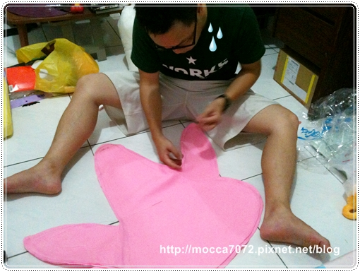
結果好不容易縫好阿星頭之後，一翻面..........
喵得咧！居然三根大小長的一模一樣 (哭).gif")
你說說看，你說說看啊！頭跟手一樣大，這能看嗎？
餅友啊～～有感受到我遭受重大的打擊嗎！？
因為打擊過大，做完頭之後整整放了2天都沒人想去碰他！哈哈哈.gif")
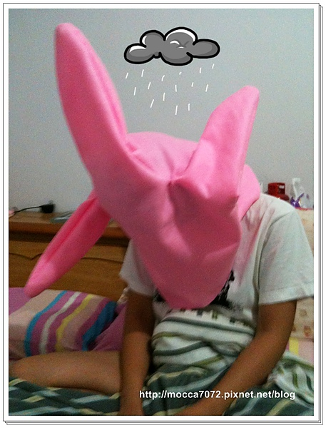
後來再度動工也是不停的卡關,遇到太多太多瓶頸都已經沒有心思拍照了~.gif")
反正就走一步算一步總算在萬聖節當天生出來啦！
鏘鏘鏘鏘~完成!!
但看到成品我們又哭了~~他ㄋㄟ ㄋㄟ的派大星怎嘛厚道啦！
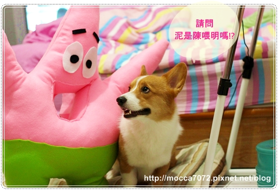
但還好大頭卡塞進去後，拍照效果一極棒耶！！哈哈哈
厚道的地方剛好給卡卡 ㄎㄨㄟˋ桃！舒服的咧~
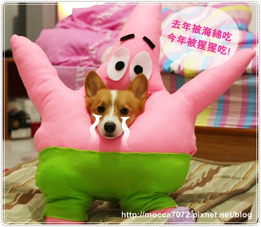
比起去年的海綿寶寶,這隻胖大星整整花了我兩週才完成！
就跟你們說手巧跟我一點瓜西都沒有了。
而且過程中酸子跟醋女兩個一度要打起來，
我說這兩個星座超不適合一起合作的~~
某醋女的X毛一度讓我白眼翻到都快下不來惹！ .gif")

爸特！雖然手作好辛苦，但成品完成超有成就感！.gif")
而且全世界獨一無二的AB型的派大星在我家！XD
歐活活活~~有志者事竟成啊!!!
明年起不能用買的啦~~大家一起手作!!!拖別人下水....(踢飛)
而且趴踢前一晚摩卡拔為了阿星的個褲當,一個人搞到半夜兩點！
大家給他的Ｘ毛拍拍手!!!哈哈哈
說真的他這次真的很用心~~真的要好好表揚一下 
==========================================
趕工完當天晚上就去會長家開趴嘍！順便慶祝他們進駐豪宅！？
我還買了萬聖節汽球應景還有Cloudy杯子蛋糕當伴手禮
杯子蛋糕是在京站的Cloudy買的，
我選得口味是店家推薦的人氣商品~蛤不錯吃呦！蛋糕體本身不會很乾
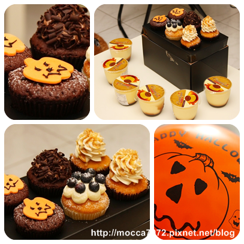
不過汽球嘛，只有我家卡卡肯賞臉，看看他跟汽球拍照笑得多開心啊！
卡哇衣~~卡哇衣~~
麻麻下次幫你買100個汽球讓你飛起來厚~~哈哈哈
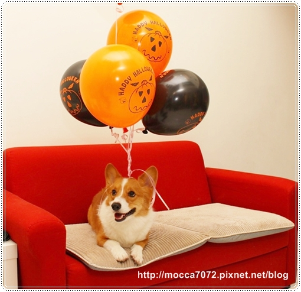
至於另外兩枚之一的阿寶公主就坐在一旁裝"堅強"
想用招牌笑容拍張照但又挫得要屎，結果弄成這副皮笑肉不笑的樣子！
笑噴！.gif")
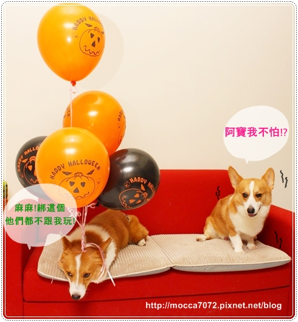
剩下這枚林卡ㄋㄟ連裝都不想裝，直接孬到底 ！(我欣賞你XDDD)
躲在桌子下又擺出可年吸吸貌,嘖嘖～這臉蛋騙了不少無知的少男們！
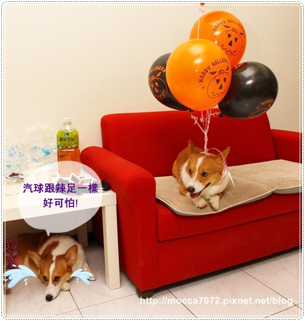
還有卡內家準備的啦啦隊服～超Ｑ的！哈哈
不過那個假髮真的不是大頭狗的菜,豪可怕啊！.gif")
只有卡ㄋㄟ適合！？ 居然還會啾咪～～
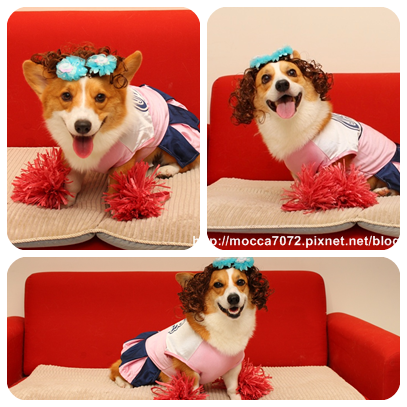
還是清純點適合我們~~笑得好萌呀!!!
寶卡卡～～好想咬一口的可愛！
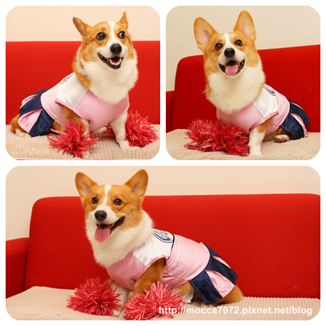
整晚最喜歡阿星就是乖寶寶卡ㄋㄟ啦！！
戴著阿星走來走去，完全不會想脫掉它！哈哈哈！
而且卡ㄋㄟ你腳果然比較長～～嘻嘻嘻.gif")
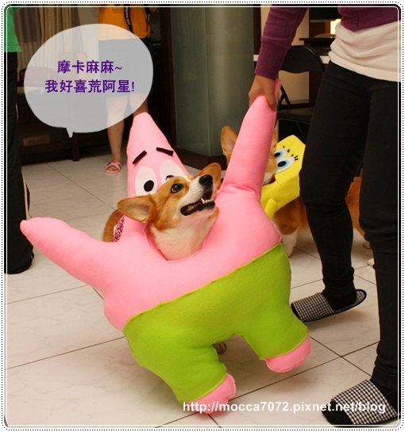
許摩卡就真的腿短了，走不動！！噗～
我應該要幫阿星穿個溜冰鞋厚！
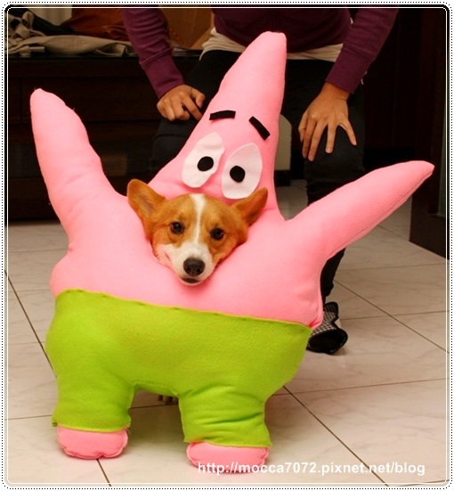
阿寶戴著海綿寶包也很剛好！還有安定背心的效果歐～
如果可以量產應該會賣得不錯！哈哈哈（不要偷我的唉迪兒！）

HaPPy HaLLoWeeN
雖然晚了點，但我還是努力生出文嘍！！
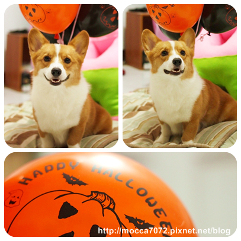
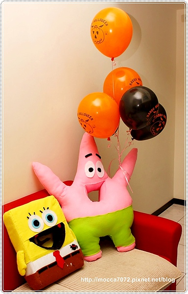
喜歡我們家的派大星的捧油,請給我個讚吧!!!!